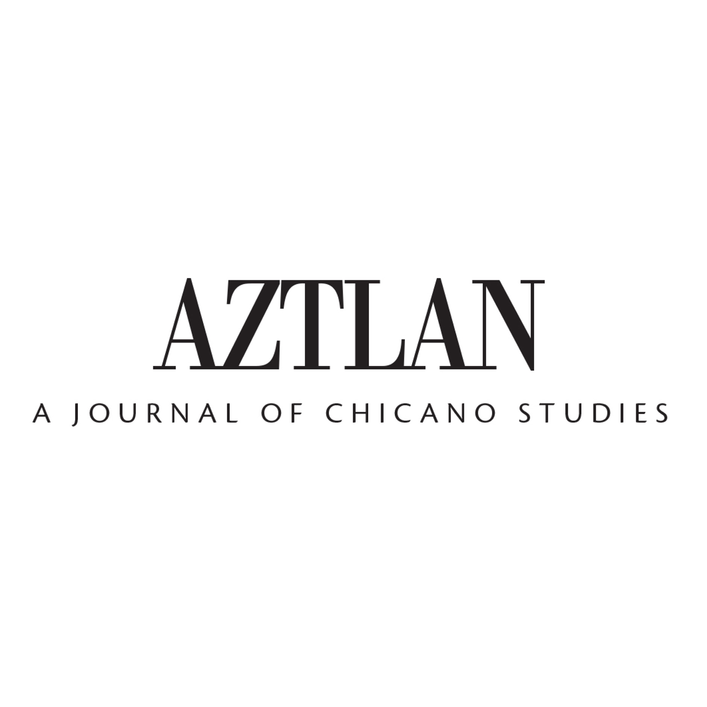
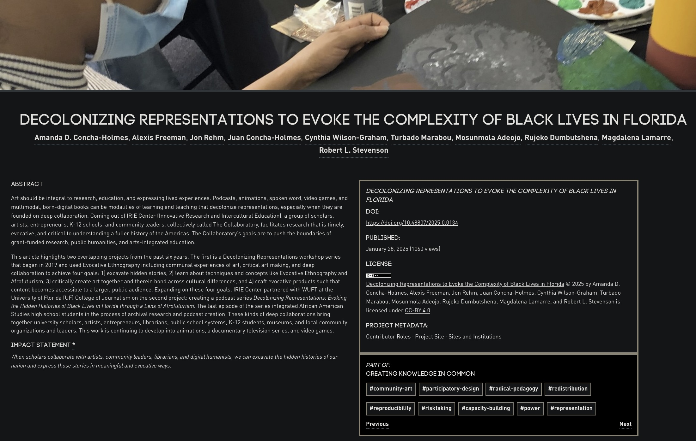
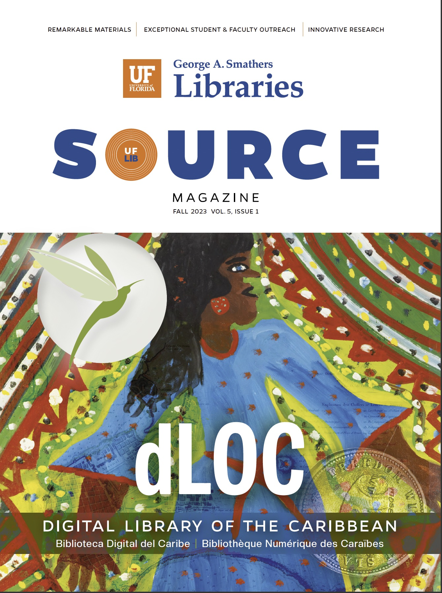

Manuscripts in Preparation
2026

Romero, A. & Gleeson, S. "Latinx Labor Rights and Workplace Enforcement."
Contribution to the 50th Anniversary Special Issue on Latinx Labor Studies, Aztlán: A Journal of Chicano Studies. (Forthcoming, Fall 2026)
Contribution to the 50th Anniversary Special Issue on Latinx Labor Studies, Aztlán: A Journal of Chicano Studies. (Forthcoming, Fall 2026)
Romero, A. & Gleeson, S. "Cities, Migrants, and Labor Conditions."
Chapter in preparation for the Handbook on Cities and Migration (Edward Elgar Publishing). (Forthcoming, Fall 2026)
Chapter in preparation for the Handbook on Cities and Migration (Edward Elgar Publishing). (Forthcoming, Fall 2026)
Publications
2025
Simmons, M., Hamilton, A., Davis, A., Dyer, W., Philippe, C.J., Heady, J., Houck, P., Romero, A., Cordova, R.A., Hendrix, D., Ortiz, P., Moeller, S., & Tang, K. "A Meeting of Two Worlds—Oral History and Linguistics: Partnerships, Perplexities, and Potentialities in Researching African American Language."
The Oral History Review.
The Oral History Review.
Book Review
2025
Romero, A. (2025). Book Review: The Latino Threat: Society for the Anthropology of Work (published November 5, 2025).
The book, The Latino Threat: How Alarmist Rhetoric Misrepresents Immigrants, Citizens, and the Nation by Leo R. Chavez, challenges alarmist narratives that depict Latinos as an invading force bent on destroying the American way of life.
The book, The Latino Threat: How Alarmist Rhetoric Misrepresents Immigrants, Citizens, and the Nation by Leo R. Chavez, challenges alarmist narratives that depict Latinos as an invading force bent on destroying the American way of life.
Explore My Teaching Portfolio
Discover my teaching philosophy, course experience, pedagogical innovations, and student feedback. Learn about my work as a Teaching Assistant for Introduction to US Labor History at Cornell University and my commitment to creating inclusive and engaging learning environments.
Visit Teaching PortfolioAcknowledged Contributions in Published Works
2025
Ortiz, P. (2025). Latino workers, the 2024 presidential election, and the future of the labor movement.
Labor Studies Journal, 50(2), 153–165.
https://doi.org/10.1177/0160449X251342375
Labor Studies Journal, 50(2), 153–165.
https://doi.org/10.1177/0160449X251342375

Concha-Holmes, A. D., et al. (2025). Decolonizing representations to evoke the complexity of Black lives in Florida.
Ground Works Journal.
https://doi.org/10.48807/2025.0.0134
Ground Works Journal.
https://doi.org/10.48807/2025.0.0134
2023

Mattson, I., Mahar, G., & Durant, F. (2023). Revitalizing Native American Oral Histories at the University of Florida.
SOURCE: The Magazine of the University of Florida George A. Smathers Libraries.
https://doi.org/10.32473/sourceuf.5.1.132681
SOURCE: The Magazine of the University of Florida George A. Smathers Libraries.
https://doi.org/10.32473/sourceuf.5.1.132681
2022
Anastario, M., Rodriguez, A. M., Xiuhtecutli, N., & Wagner, E. (2022). Characterization of lifetime agrichemical exposure sequences relative to international migration in foreign born Latinx agricultural workers living in South Florida.
Journal of Immigrant and Minority Health, 24(5), 1145–1153.
https://doi.org/10.1007/s10903-021-01278-5
Journal of Immigrant and Minority Health, 24(5), 1145–1153.
https://doi.org/10.1007/s10903-021-01278-5